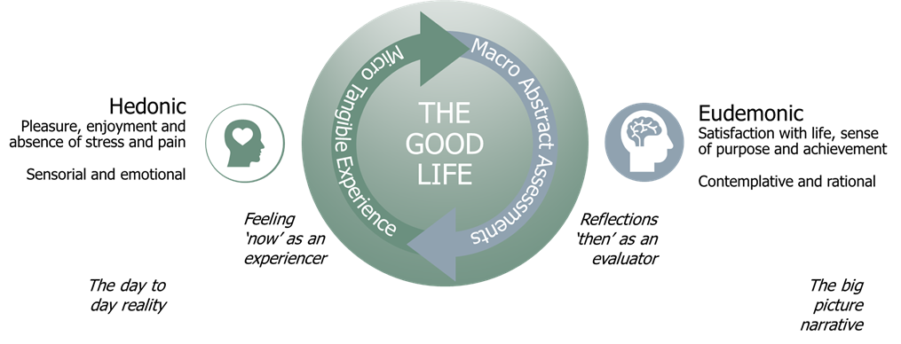
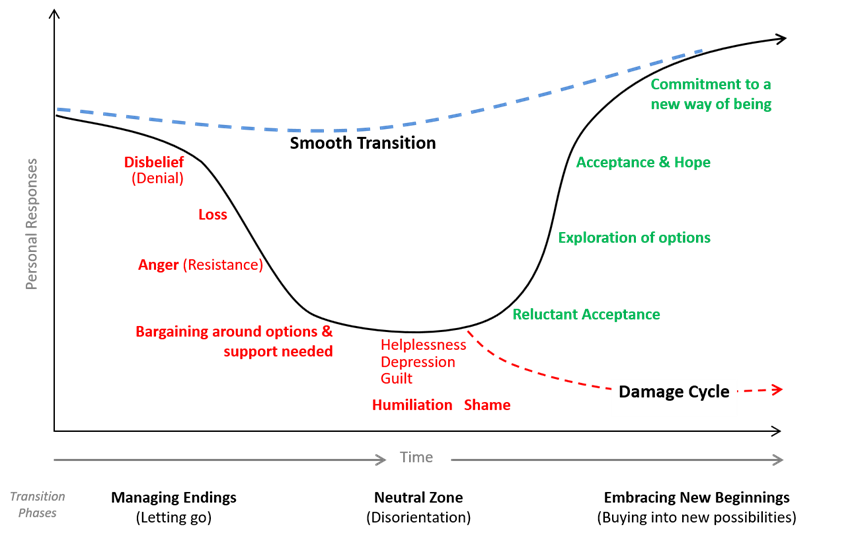
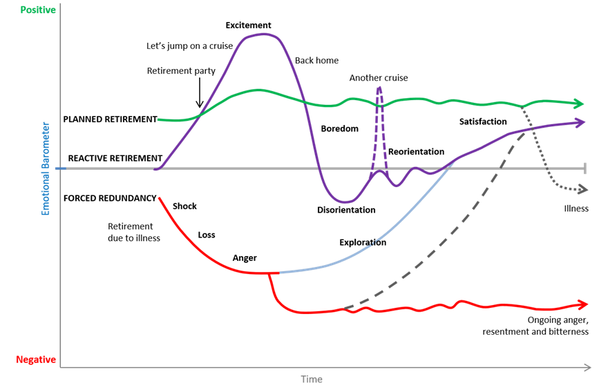
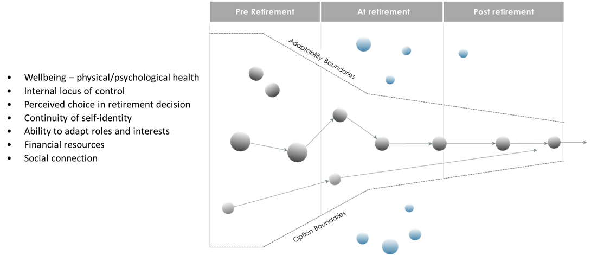
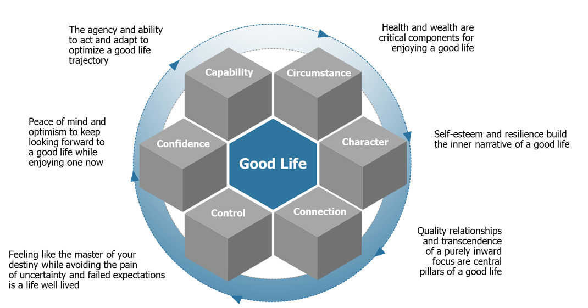
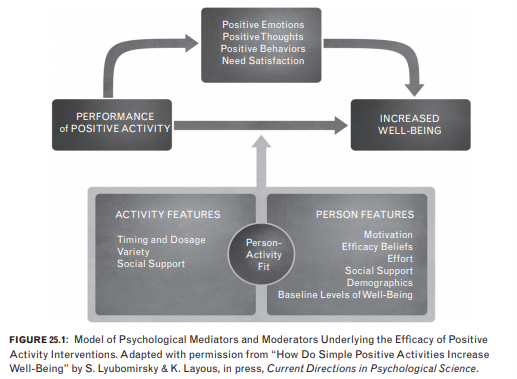

The Good Life
Purpose of this Report
This secondary research report is designed to provide a highly curated summary of studies and evidence based behavioural finance theories informing retirement satisfaction and the role advisers can play to support this.
Consideration of a client’s financial wellbeing, broader emotional wellbeing and what constitutes happiness and life satisfaction are critical to the day-to-day role of an adviser.
ASIC has identified that good quality advice refines and clarifies a client’s objectives, and helps the client, as much as possible, to achieve those objectives.
To do this well requires an adviser to consider the drivers of financial wellbeing and broader life satisfaction. We should keep in mind that under the FASEA Code, advisers have an ethical responsibility to provide their services with competence and diligence.
Further, consideration of behavioural economics and cognitive factors are foundational to assessing a client’s risk profile, including objective risk capacity and subjective risk tolerance and biases, and making suitable recommendations.
So, this report takes a broad view, incorporating insights into what makes for a good life now, and in retirement. Critically, it focuses on the enabling factors and barriers to achieving retirement satisfaction both in terms of subjective wellbeing and objective financial wellbeing.
The focus is on insights that might be practically applied in advisory relationships to both enhance the value of the offer and help ensure the priority of client’s best interest outcomes. This review is the basis for forming key hypotheses to explore in subsequent primary research and provides proven behavioural science frameworks to guide our efforts.
We will first consider what really constitutes a good life and what this looks like in retirement. We will then consider why a good life really matters and the tangible benefits it delivers to both client, adviser and the broader economy. Finally, we will briefly consider some of the practical opportunities for financial advisers to play a greater systematic role in promoting a good life for their clients and demonstrate both prudential and present value in the relationship.
What is a Good Life?
Happiness has become a ubiquitous term for both enjoying life and being satisfied with it. The word derives from the term for good fortune (happenings), or “good hap,” and the terms used to translate it in other languages often have similar roots. It commonly refers to a life experience of well-being and good fortune. While the concept has been defined and measured in many ways, there are two popular conceptions that encapsulate the main schools of thought i.e. hedonic and eudemonic happiness.
Happiness - Now and Then
Hedonic happiness is achieved through pleasure and the absence of discomfort and is experienced ‘in the now’. Eudemonic happiness is achieved through satisfaction with life including perceptions of achievement, meaning, purpose and contentment i.e. an assessment reflected on ‘then’.
Most would agree that both are important to achieve a ‘good life’. The challenge is that these two conceptions while connected can often appear to be at odds. Despite the universal desire to ‘be happy’, the human condition attests to the fact that its dogged pursuit provides no guarantee of success.
In very simple terms the contradictions we all wrestle with to some degree include;
- What makes you happy right now may not make you happy then
- What you thought would make you happy then does not always make you happy now or then

'Now' vs 'Then'
Let’s bring these apparent contradictions to life with some examples we can probably all relate to.
The Happiness Paradox
We all want to be happy and typically devote a lot of energy to identifying and pursuing the things we believe will make us happier in life. Paradoxically this very steely focus on chasing idealised conceptions of happiness can leave us less happy and possibly less capable of achieving our dreams.
This can occur for several reasons;
- Goal focus alone can leave us feeling like we currently live in a perpetual ‘failed state’ in relation to our idealised ‘future state’ of happiness and achievement. This can make us unhappy in the present and undermine our motivations, discipline and capability to achieve our happiness goals.
- A blinkered goal focus can also result in disappointment by manifesting expectations of ‘perfection’ that leave us hollow and no happier soon after achieving the goal. Achievements typically only bring momentary impacts to our hedonic happiness. The workaholics among us may be more likely to achieve success but less likely to truly feel happy day to day.
- Finally, there is experimental evidence that demonstrates unrealistic goal fantasising can often distract from real action. Fantasising about winning the lottery or buying that leisure craft may deliver a little dopamine rush in the moment that placates the tension of a greater need to take more control of our destiny.
'Feeling' Rich and Successful
Money does not buy you happiness but lack of money and confidence in your financial security can certainly buy you misery. The correlation between wealth and happiness is clearly evident at the lower end of the scale but flattens out considerably for the mass affluent. We also don’t see the type of differences we might expect between countries of varying levels of economic prosperity. Money provides diminishing returns in its happiness buying power. This is known as the Easterlin Paradox.
Interestingly we also see the role of relative perspectives at various levels of wealth. There is no absolute sum of money that makes everyone feel ‘rich’. Rather it depends on who you are comparing yourself to, the expectations you have for what constitutes a ‘rich life’, and how secure you feel in keeping what you have.
This is why we often see a dip in wellbeing and financial security in those who are objectively wealthy but not yet secure in their current position. They may also be focused on reaching their next level of aspiration so their current position feels wanting in comparison (a comparatively ‘failed state’). Of course at the upper ends of wealth we see greater stability but happiness and wellbeing still flatten out no matter how much more money is accumulated. Feeling rich is subjective and largely about the way you see things relative to your expectations in life.
The other interesting phenomenon here is the divergence between day to day happiness and overall life satisfaction that is often seen among wealthy and successful people, confirmed by a recent Gallup World Poll. The most successful among us may have planned well and worked hard towards their prosperity yet often not planned well for the day to day life they will be truly happy leading.
Are we satisfied by achieving the desires we once had or does the present moment typically find us retargeting our desires? Is the process of working towards these desires just as satisfying as the actual achievement of them?
We know that merely achieving what you desire is no guarantee of happiness. Achievement or success may not provide sustained happiness. Our desires can constantly pull just out of our reach as our expectations develop or we may become desensitised to the satisfaction our desires once provided. We may desire things that are incompatible with our own best interests and longer term happiness. We may find that after building up expectations the reality of achievement leaves a sense of emptiness. Perhaps there can even be disappointment that the journey is ‘over’.
On average, material progress has some tendency to help people get what they want in life, as found in the life satisfaction measures, while relationships and engaging activities are more important for people’s emotional lives.
The 'elasticity’ of wealth and subjective wellbeing

The Importance of a Happy Ending
When we assess where our life is at and plan for future happiness we are naturally drawn to the need for narratives, the story of our lives in which we star. These stories can also have a lot to do with how we cope with the inevitable ‘bad hands’ that life can throw us. This can be associated with how much control we feel over our lives.
Through the lens of our personal perspectives we define our stories through memories of significant moments and endings. These have emotional currency to become significant. Most importantly, a happy ending is more important than a happy middle.
This demonstrates the complex relationship between time and the way we assess happiness in our lives. Consider an example of an amazing holiday experience designed to bring you and family joy. If you were to have to log your level of happiness every 30 mins during the holiday and summed or averaged your accumulated happiness scores we would likely come up with a very different result than if we were to ask you how happy you were overall two weeks later. You may forget the travel hassles, disappointments and other discomforts to focus on the meaningful memorable experiences you had. Finishing the holiday on a high note regardless of any preceding trials is also likely to garner more favourable assessments of your overall happiness during the experience.
Our memories and personal perception lens are the basis for our ‘personal happiness’ assessments which guide the choices we make about the future. Consider for a moment if you would be willing to pay for a holiday that is guaranteed to be the best holiday experience you ever had – but you would not be able to remember any of it afterward.
How much do we value experiences for the pleasure they gives us in the moment vs the pleasure of remembering them? When we choose between future options we largely choose between memories of experiences to make the assessments. Accordingly we often think about the future and our choices like an anticipated memory. All this has major implications for how we deliver valuable experiences and guide choices about the future.
Present vs Prudential Value
We all know this fundamental trade off – we want to maximise our happiness now without forgoing our future happiness. We may want to indulge in food and spend money and conversely avoid the pain of exercise, abstinence and saving yet we know that in the big picture there must be some kind of trade off to give us a decent chance of future happiness.
The tangibility of ‘happiness value’ in the present is clearly more persuasive than more abstract promises of happiness in the future. Beyond self-control biases for delaying gratification there are many other natural biases toward favouring our ‘now’ priorities. These include hyperbolic discounting, status quo bias and our general avoidance of uncertainty when making future commitments which require current ‘sacrifices’. We might think of future ‘then’ priorities as having prudential value.
While they almost feel like opposing trade-offs sometimes, we can make some critical connections between present and prudential value. Consider a person who is feeling anxious about their family’s financial security and apprehensive about facing retirement in the future to the point of losing enough sleep they seek professional financial planning advice. This advice provides more certainty around how risks will be managed and retirement will be funded giving the consumer much greater confidence about their situation, the path forward and the key commitments they needed to make from here. It may even feed into self-esteem and relationship wellbeing. This prudential value then provides them with peace of mind and significantly less stress in the present. They are happier now because of something they have done for the future. This leads us to the next critical insight around how happiness really often just looks like avoiding unhappiness.
Not Being Unhappy
When we look more deeply into the biology of feeling happy and unhappy along with the motivational role the pursuit of happiness plays in our daily existence we see another key facet of what it really means to feel happy, good and balanced. There is much evidence to suggest that our core motivations to act and what makes us feel good is less about getting things than it is about reducing a bad feeling that needs to be resolved. These are the drive tensions in our homeostatic system.
Consider your motivation to seek food and take pleasure in consuming it. Sure having the food brings some joy but the underlying core biological motivation is avoiding the tension of hunger or thirst. Even something like sex which provides short term rewards is an expression of released tension which is ultimately designed to provide the prudential value of offspring.
This biological ‘motivation operating system’ was not developed for modern social humans. The social pressures to survive in today’s world have seen us repurpose the use of our natural motivation drives and stress responses. These were designed for early humans for survival instincts and as temporary ‘crisis modes’ when faced with real existential threats – say a lion lurking over in those bushes. They were never designed to be prolonged or triggered by abstract social threats like worrying about what people think about you at work or whether you are going to be able to afford that thing you want.
These days our emerging social needs to belong, connect, be esteemed and actualise are being interpreted by our biology as survival needs (and arguably they are). It is enough for just a thought of self-despair to trigger a major stress reaction and psychic pain that desperately needs to be relieved to feel happy and well. We get stressed when we are knocked out of our homeostatic balance. However we also can get stressed when we anticipate being knocked out of balance (whether in fact we really are or not). We turn on exactly the same stress response when we are running from a lion as when we imagine psychosocial threats. Stress is meant to be a short term adaptive response but we turn it on and keep it on for a 30 year mortgage.
When these reactions are sustained they cause both unhappiness and major health problems. They also induce negative mindsets that are self-fulfilling in life. Helplessness is learned and entrenched feeling you have lost control of your destiny. These processes are often the core drivers of anxiety and depression – the opposites of happiness.
It also appears we are somewhat wired for greediness and dissatisfaction - we tend to default to ‘wanting’. This makes sense to keep our homeostatic motivations systems primed so we get out of bed everyday but can leave us feeling empty in the eternal pursuit of things we think will make us happy because we don’t feel happy now i.e. homeostatic tension.
Cognitive dissonance between how we want to think about ourselves and the way we actually behave can also cause great ‘psychic discomfort’. So much so that we often would rather avoid or change our thinking than change our behaviour. We might also seek to blame externalities and resign ourselves to having no control. Conversely when we behave in a positive way we are likely to reinforce our mental commitments to this self-gratifying feedback loop. Often the cart is leading the horse more effectively when it comes to thinking and doing!
What is even more fascinating is that our stress and rewards response is not only activated by actual events in our lives but even more so by the anticipation of them. This is a key reason why we abhor uncertainty and ambiguity. Securing more certainty about the future is a commodity that makes us happier now. We conversely also often derive even more pleasure (as evidenced by dopamine release in our brains) from the anticipation of future rewards than actually receiving them. This insight into our motivational drivers provides another connection between future and present value.
So looking at all the experimental and practical evidence what is at the core of inability to cope (or on the flip side what abilities do you need to be happy)?
- Lack of control
- Lack of ability to release tensions
- Lack of support and connection
- Lack of ability to adapt
- Build sense of self efficacy and agency
- Build capability and reduce effort to take positive actions
- Provide ongoing support to take positive actions
- Establish positive reinforcement loops (linking empowering actions to improving circumstances)
- Build internal locus of control (predictability and expectation achievement)
- Provide a trajectory towards improvement and instil belief things will get better
Different Strokes for Different Folks
Another poignant example that highlights the nuances of defining a good life in its entirety is the ready observation that one size does not fit all. Let us consider the life of a ‘suffering artist’ who has traded off the pursuit of maximising comfort in the now and security for the future to prioritise the pursuit of personal purpose and meaning. We could argue the virtues of such trade-offs from our own personal perspectives but we could all probably agree on one thing – the ‘artist’ would not necessarily be any more happy now or in the future living the life of a successful business executive in great comfort and security yet lacking in what defines meaning and interest to them. Conversely we might see that highly successful persons with great levels of life satisfaction admit to forgoing their day to day happiness to some degree. There is no formula for getting the right balance. It’s all about living your best life, not someone else’s. The trick is to possess self-awareness, agency and tools to adjust the controls on your destiny trajectory as needed.
Happiness (and Value) is in the Eye of the Beholder
Our sense of happiness is largely guided by our own personal perspectives. We tend to judge the value of things in terms of how happy we think they will make us. So value too is in the eye of the beholder and filtered through assessments of happiness – most value is created in our minds not based on objective external qualities. We value by comparison and we are deeply influenced by internal psychological processes. Things are not what they are; they are what we think they are. They are what we compare them to and how they make us feel. How well they reduce our tension of perceived need. Critically, psychological value is often the most enduring and influential to decisions making.
By example, consumer satisfaction was significantly increased with one simple change to the London tube system – introducing boards with the time remaining for the next train to arrive. Because we naturally abhor uncertainty, the simple piece of information actually reduced perceived waiting time by reducing the uncertainty of it – we are happy waiting 9 minutes for a train knowing it’s going to take 9 minutes than 5 minutes with no certainty. This clearly demonstrates the impact on happiness certainty can deliver and the perceived value this then creates. Making clients feel happier makes them value the relationship more.
The Challenges in the Pursuit of Happiness
There are several challenges in trying to systematically promote the achievement of happiness, which include:
- Few consistent comprehensive definitions i.e. happiness and wellbeing are becoming less meaningful words and something that a lot of lip service is paid to.
- There are fundamentally two different associated perspectives of a holistic ‘good life’ that can become disconnected i.e. the experiencer (in the moment) and the evaluator (retrospective assessment) i.e. being happy in your life and being happy about your life
- Our proximal (now) vs distal (then) motivations to pursue happiness often appear to conflict
- We become too fixated on ‘achieving’ happiness through the pursuit of short-term pleasures or conversely abstract life goals i.e. our dogged efforts to become happier can sometimes undermine this very pursuit.
- While there are common factors that drive happiness in us all they are weighted very differently by individuals and there is no one size fits all solution to follow.
What does a good life in retirement look and feel like?
Wisdoms from the experienced
Formal research backed by direct accounts from those who have experienced the retirement journey through its various stages highlight common symptoms for a ‘successful’ retirement. While objective life circumstances play critical roles, most key elements are more about how you feel than what you have or what has happened to you. These elements are interdependent and look different to everyone but still form the key pillars required for a balanced ‘good life’ in retirement.
Wealth – We cannot escape the objective reality that wealth in retirement provides a greater sense of control and can secure a more comfortable good life. Of course, financial wellbeing feeds into other elements such as health, relationships, self-identity and social opportunities.
Wellbeing – Physical and psychological health are a key influence on our happiness in retirement. This includes the level of stress we experience, including lifestyle aspirations, finances and debt. Having appropriate health funding can also considerably reduce stress and encourage preventative health measures. However, health issues become somewhat inevitable the older we become so it’s not just about your experience of poor health but how well you cope with these challenges.
This brings us to the power of positive mindset thinking - forward looking, seeing opportunity ahead rather than ruminating on regrets, continuing to flourish rather than wither. Embracing the resiliency to face and cope with inevitable changes ahead in our lives as we get older makes us more likely to succeed in retirement.
There is much evidence to demonstrate that retirees who plan ahead and look forward to the future live longer and happier. There is also evidence that shows that retirees with this mindset are much less impacted by pain, disappointment and loss than their more pessimistic counterparts. Their perspective changes their experience and foster their ability to cope with inevitable changes.
Expectation alignment and acceptance – We have all heard the definition of happiness as reality minus expectations and there is a lot of truth in this. So much of our experience of a good life depends on comparisons – with our social environment, with what we think we ‘deserve’ and with what we have come to expect.
When expectations do not align with reality the acceptance process is much harder. However, many retirees, especially at the modest end of the wealth scale, are able (or forced) to post rationalise where they have landed and make the best out of their circumstances. It can be extremely painful to have to admit you are not happy with where your life has led to and that you are left wanting. This kind of cognitive dissonance adaption may mask the fact that many retirees have had to make more of a compromise to the quality of life than they would really like.
Control and certainty – These are among the most commonly cited drivers of happiness by retirees themselves and also relate to expectation alignment and acceptance. The sense of feeling in control in your retirement is both a great source of joy and conversely in its absence a potential source for stress and misery. Regardless of circumstances retirees will always be fundamentally happier when they feel in control and not plagued by uncertainties about the future.
Sense of control comes from planning, visioning the future and having confidence to navigate the unknown – the agency that things you do can make a difference. The most common advice from retirees to their younger self is plan earlier. Many retirees do not feel fully in control of their retirement date and have to make major adjustments they were not fully prepared. Many wish they worked longer or could return to work, while others that they had invested more in health and social connections earlier.
Connection – A central pillar for happiness. In the absence of many of life’s comforts and achievements the experience of belonging, connecting and transcending oneself can still be enough to bring many people a strong sense of leading a good life.
Conversely, being able to tick the boxes on all the other elements but this one can still leave most people feeling they are not living their best life. Relationships and quality connection, whether they be with partners, family, friends, colleague, communities or even a higher power are fundamental to our wellbeing.
The most comprehensive study of happiness conducted by Harvard happiness for over 75 years has some very clear conclusions - good relationships keep us happy and healthy. It’s the quality of close relationships rather than the quantity. It often about coping too – those in good relationships report less impact on happiness when experiencing pain, sickness or loss. Those who are lonely amplify their physical pain with emotional pain.
Mental engagement – Many happy retirees report continued learning endeavours, hobbies, passions and engagement with work and the broader world that keeps them intellectually stimulated. This is a key symptom for retirement success but possibly the real take away here is the avoidance of boredom. It doesn’t really matter what engages you, just don’t get bored. Boredom will kill you. Many retirees report struggling with what to do with all the extra time on their hands post work and had not planned realistically for this.
Purpose, identity and legacy – As our motivational needs move up Maslow’s hierarchy beyond security, comfort and connection we find the need for maintaining our self-esteem. Our personal narrative needs purpose beyond just getting by and avoiding discomfort. Our inner story also craves continuity – a happy ending where we are in control and don’t lose what we already have. We want to maintain our self-identity despite the changes we face in societal and family roles as we get older – are we still needed and valued? We also tend to struggle with the concept of finality so we also find solace in the ‘legacy’ we leave behind – whether financial for family, enduring contribution to community or just how we hope our lives will be remembered by others. Those retirees who are able to fulfil these needs for meaning and come to peace with their final destination are much more likely to enjoy the last leg of the ride.
Transition vs Event
Retirement is increasingly becoming a series of transitions rather than one specific event for many retirees - especially in white collar professions and the self-employed. Many Australians are increasingly intending to delay retirement and attitudes to working longer appear to be shifting – whether to provide additional financial resources, maintain a sense of purpose and connection or just stave off boredom. A recent study of senior Australians found that most retirees felt they retired too early and would consider re-entering the workforce if they could. Clearly the traditionally idealised narrative of walking off into the sunset after a handshake and gold watch is currently being rewritten. Retirement is becoming a journey rather than a destination.
So, what typically happens to levels of happiness when people retire? Studies have shown that about 75% of all elderly have roughly the same quality of life, before, during and after their retirement. However, perspectives depend on the type of work you have been doing all your life. Those with stressful, tiring and physically demanding jobs often experience retirement as a relief and can even see an increase in their quality of life often because they now have more control of their time.
However, for others who identity strongly with their profession the transition can be more of a struggle and see feelings of loss. They feel loss of control, purpose and self-identity. While most eventually adjust, a significant number feel their quality of life never returns to what it was before they retired. This group tends to benefit from extended professional involvement albeit in scaled down commitments. They are best served by phasing out of the workforce and phasing into retirement.
Dealing with Change
A critical factor for retirement satisfaction across work roles is a sense of control of the departure. Unfortunately, most people report this was not fully planned or in their control. Research shows that the transition from working life to retirement is a major life change. As humans we tend to be apprehensive about big changes in our lives especially if we don’t feel fully in control of them. There is a considerable amount of anxiety felt among pre retirees about retirement which can erode their present happiness and set up a negative mindset for facing retirement changes in their life.
The psychological stages of dealing with loss or change have been well established. While these are natural human responses to the stress of loss and uncertainty, we don’t always move through process effectively and get stuck. When we remain in these negative response phases for sustained periods, we can shift into long term damage cycles. In fact, this inability to ‘cope’ precedes long-term depression and anxiety issues which are becoming increasingly prevalent in our modern society.
We are prediction machines and most behaviours and thoughts we have are designed to reduce uncertainty – the greatest perceived threat to our security. It feels safer to hold on to our existing assumptions and look for confirming evidence than to embrace the tension of questioning these and stepping into uncertainty.
The psychological processes of dealing with change and loss

Adapted from W Bridges, Managing Transitions: Making the Most of Change
Applying this lens to the considerable change and potential sense of loss experienced by transitioning retirees demonstrates the adjustments challenges they face – especially when retirement is unplanned or forced.
Emotional responses to retirement transition

Adapted from RC Atchley, The Sociology of Retirement
Factors influencing retirement adjustment success
As we approach and enter retirement our ability to adapt and the options we have to take control can naturally diminish. Knowing the critical factors that determine a well-adjusted retirement can help us plan earlier for these critical needs. Psychology, research evidence and retiree accounts confirm key factors having the greatest impact on our ability to adjust to the changes that retirement poses. These factors need to be planned for and invested in as early as possible to optimise retirement ‘success’.

It is also important to consider the concept of equifinality – there is no one right way for everyone. We all have our own priorities and circumstances to accommodate. We all have our different styles for adapting to change in retirement. We need to recognising age and different life experiences. We need to be aware of the different needs underpinning our values and expectations. Some typical successful adjustment styles include;
Continuers: Who continue using existing knowledge and skills but in a different context or at a lower level of intensity.
Searchers: Who explore new interests and sources of meaning, often by trial and error
Adventurers: Who want to do something completely novel or different
Involved spectators: Who care deeply about the world but who engage in less visible ways.
Easy gliders: Who enjoy unscheduled time relaxing, reading, socialising and generally letting each day unfold.
Retreaters: Who take time out or are generally content to live a quiet, more reflective, contained life.
Super agers: Who live very active lifestyles well into their 80s and 90s. Continue to challenge themselves with new tasks and social involvement. Many work until very late in life by choice because they love their work and feel empowered to stay in the workforce.
Concepts adapted from Humphrey Armstrong, Connecting the dots ©Lifelong learning systems
Why Does a ‘Good Life’ Really Matter?
Who is Responsible for Promoting a ‘Good Life’?
The modern liberal democratic system tends to take a positive view of human nature and the individual’s capacities for making good choice in their own best interests. The protection of individual freedoms to choose and pursue the ‘good life’ as they see it is a central tenet of democratic governments and societal expectations. The reason for and traditional success of capitalism has been to improve the overall quality of life in a society.
However, beyond this there has been less consensus on what role the state or private organisations should be required to play in the well-being-promotion business.
There is currently a mountain of scientific and anecdotal evidence that people in fact systematically and predictably err in the pursuit of their own best interests despite freedom of choice. It has also been proven that effective strategies exist that help correct for such faults where everybody wins.
We know that covering off legislative requirements with increased legalese and qualification does not improve consumer decision making confidence or outcomes and can even foster avoidance behaviours.
We know that wellbeing has an economic value – it promotes cooperation, productivity and health at a societal scale. Lack of it drives less cooperative efficiency, market participation, public system burden and societal cohesion (court systems to corruption and public trust). These have real costs to the economy, government and all of us individually.
So, if we now know all this is ignoring this fundamental need to effectively promote wellbeing and rational decision making akin to a form of negligence?
Financial services institutions are now legislatively required to serve the ‘best interests’ of their customers. If we accept that we are by no means guaranteed to make decisions and take actions in our own best interests (and in fact prone to do otherwise) - what becomes of the role of providers who are committed to serving this ‘best interest’ outcome? Does the need to help ensure that a customer decides and acts in their own best interest become the ‘duty’ and even true ‘purpose’ of a provider beyond making profit? Is true freedom of choice only possible when the chooser is fully capable or supported to do so effectively?
The financial industries renewed focus on customer best interest and optimised outcomes must extend beyond emphasis on returns and product solution choices. We need to factor in the reality of how people make optimal best interests decisions, their emotional needs and the real ‘problem’ they are trying to solve i.e. maintain or improve their quality of life and feel good. We need to build in the ability to systematically move the dial i.e. effect positive behavioural change in consumer’s best interests.
We need more ‘experience innervation’ rather than just more 'product innovation'. This suggests the virtue of design thinking and more prevention intervention style approaches to promote best interest outcomes. Transcending product and returns to deliver tangible present value and optimised outcomes to consumers.
There is plenty of power in this purpose, but promoting the welfare of ALL stakeholders is above all smart (not just idealistic).
The recent focus on legislating best interests duties mean that a deep consideration of authentic wellbeing promotion of customers must underpin any compliant financial services organisation operating model.
All this also begs the questions around the need to measure this broader sense of wellbeing, fulfilment and life satisfaction to embrace the need for a ‘prudential value’ in the definition of wellbeing in financial service consumers. Let’s get away from the ‘warm and fuzzies’ by linking subjective wellbeing to ‘objective’ factors that demonstrate ‘prudential value’ being gained.
This leads to the question of “What does life satisfaction and fulfilment (i.e. personal success) look like for me?” “Will achieving my ‘vision’ truly bring me sustained happiness?” “What can I do now and day to day to optimise my chances of being truly satisfied and fulfilled?” In this case we start to consider happiness as a kind of prudential value, more commonly, well-being, welfare, utility, flourishing, growth and even empowerment. “Happiness” in this sense concerns what truly benefits a person and makes them better off, serves their best interests, or are deeply desirable for their own sake. This typically involves some sort of global judgment: an endorsement or affirmation of one’s life as a whole. It may also involve or accompany some aggregate of judgments about particular items or domains within one’s life.
The Adviser’s Moral Responsibility
Financial wellbeing is important for individuals, families, communities, society, business and the economy. Research shows that financial wellbeing is at the fulcrum of mental wellbeing, emotional wellbeing and physical wellbeing.
When clients feel like their finances are getting on top of them, they drink more and sleep less, which negatively impacts on their mental health. As their mental health deteriorates, they feel more financially stressed. Left unaddressed, it can become a vicious cycle. All this can have marked negative impacts on their relationships at home and at work.
Wellbeing has an economic value too – it promotes cooperation, productivity and health at a societal scale. Lack of it drives less cooperative efficiency, less market participation, less societal cohesion and public system burden. These have real costs to the economy, government and all of us individually.
The Adviser’s Ethical Responsibility
Advisers have an ethical responsibility to provide their services with competence and diligence. ASIC has identified that good quality advice refines and clarifies a client’s objectives, and helps the client, as much as possible, to achieve those objectives. This requires an adviser to consider the drivers of financial wellbeing and broader life satisfaction.
On 1 January 2020 compliance with the FASEA code of ethics became mandatory for financial advisers. The code of ethics comprises five values and 12 standards.
The value of Competence requires advisers to assess the professional services required by each client with regard to their individual needs, priorities, circumstances and preferences, expressed or implicitly identified as the subject matter of the financial advisory engagement.
The value of Diligence requires that advisers exercise due care and skill in the way they understand each client; diagnose each client’s needs and issues; and ensure the strategy recommended is intended to improve the client’s financial well-being.
Standard 2 of the FASEA Code sets out that advisers must act with integrity and in the best interests of each of your clients.
To act in a client’s best interests requires advisers to ensure that the advice, products and services recommended are appropriate to meet the client’s objectives, financial situation and needs, taking into account the client’s broader, long-term interests and likely future circumstances.
Advisers can demonstrate compliance with Standard 2 by showing their advice improves the client’s financial well-being and is in the best interests of the client rather than merely what the client wants.
Standard 6 requires advisers to take into account the broad effects arising from the client acting on your advice and actively consider the client’s broader, long-term interests and likely circumstances.
How Can We Promote a Good Life?
In an effort to unify the critical elements proven to promote a good life (rather than purely define one) we have developed the 6C framework.
6Cs FOR PROMOTING A GOOD LIFE IN RETIREMENT

What Are Finanical Advisers' Jobs to be Done?
Let’s keep front of mind the practical value and application the promotion of a good life and understanding of behavioural finance has for financial advisory relationships.
- Improve understanding of the client’s financial goals and underlying needs
- Deliver on what the client expects
- Assess the client’s risk profile, including objective risk capacity and subjective risk tolerance and influencing biases
- Make recommendations in line with the client’s risk profile
- Maintain a systematic (consistent) approach
- Build relationships that benefits both client and adviser
- Build value of ongoing advice relationships
- Help clients articulate the value of advice
- Help manage the client’s emotional needs while addressing their best interests
- Building financial capability and discipline
- Systematising and measuring best interest duty efforts.
What Are Pre and Post Retiree's Jobs to be Done?
The ‘jobs to be done’ framework helps us flip our perspective and identifies the job a person is trying to do when they seek or use a product or service including;
- The ‘problems’ which motivate people to seek a solution
- The forces holding them back from acting
- The social and emotional influence on their choices
- The essential job at hand in their perspective
“Product developers often start with what we know exists, and try to "make it better," as opposed to starting with the actual consumer job-to-be-done” - Chris Spiek
Homo Economicus vs Homo Heuristicus
There are a range of emotional biases we all experience to some degree that can drive sub optimal decision making and financial behaviours. Many revolve around our natural aversion to ‘losing what we have’ and avoiding uncertainty in the future (e.g. loss aversion, ambiguity aversion, status quo, endowment, and regret aversion). Others reflect our tendency to lack self-control or overestimate our own abilities. There are also many cognitive biases that impact our financial decision making and commitments such as sunk cost fallacy, status quo bias, anchoring, probability biases and hyperbolic discounting that tend to become mental barriers to taking action and control.
We know that all humans consistently depart from rationality under conditions of uncertainty e.g. financial decisions about the future which involve risk and uncertainty. We don’t have perfect information (or the ability to process it all effectively) and we tend to fall back on heuristics (short cuts and rule of thumb in our ‘good enough’ assessments). We are strongly motivated and find our decision making heavily influenced by our emotional biases and need to maintain self-esteem.
All this makes for some pretty average ‘best interest’ decision making and action taking on our parts as one of life’s eternal struggles. The good news is that these cognitive and emotional biases that get in our way are entirely predictable and diagnosable. There are also clear practical steps to proactively addressing these ‘best interest’ needs. There are systematic methods any adviser can use to diagnose, modify and adapt to their clients depending on their circumstances, dominant biases and best interest needs. This also has clear implications for asset allocation and product selection.
There is no doubt that an understanding of how investor psychology impacts investment outcomes will generate insights that benefit the advisory relationship. The key result of a behavioural finance–enhanced relationship will be a portfolio to which the advisor can comfortably adhere while fulfilling the client’s long-term goals which is a ‘win win’ for everyone.
Practical application of behavioural finance in advisory relationships leads to higher quality advice, especially in relation to:
- Formulating financial goals
- Maintaining a consistent approach
- Delivering what the client expects
- Ensuring mutual benefits
- Structuring suitable asset allocations
- Apply behavioural nudging to optimise outcomes
- Demonstrating tangible holistic value
How might advisers put these principles into action in their day to day practice? While this may seem onerous at first there are some simple steps that weave into existing engagement touchpoints - enhancing rather than burdening them. The process involves;
- Considering how the client’s biases and life perspectives affect their risk tolerance, asset allocation preferences and assessments of ‘successful’ personal outcomes
- Considering these factors along with their articulated goals and circumstance to formulate strategies and valuable conversations that moderate and adapt accordingly i.e. behaviourally adjusted best practical asset allocation
- Adapt more to emotional biases than to cognitive biases and modify more when there is less wealth or more financial security at stake
- Use optimal option and discussion framing to assist rational best interest decision making
- Build self-awareness, financial confidence and capability to optimise ‘good life’ trajectory
Paradox of Choice
Knowing that control and empowerment is so important the pursuit of happiness implies the need for freedom of choice. However, we are much more comfortable with bounded rationality in our decisions and paradoxically more choice does not leave us any happier or able to make the right choice of or ourselves. This is because option paralysis typically leads to avoidance behaviours. We are also typically less happy about decisions with many options because we build expectation of making the perfect choice which can leave us disappointed and post decision the perceived opportunity cost can erode our satisfaction. People want to feel good about the decisions they make and commit too - often even post rationalising their choices to reduce dissonance and buyers regret.
This suggests that simply providing consumers with more product options and more information does not in fact help them make better choices. There is clearly a need for supporting decision making with curated relevant options and choice guidance.
One real world experiment amply demonstrates these principles. A large corporate employer in the USA sought to increase the voluntary pension saving participation of its employees by matching their contributions and offering a wide range of investment options. When the uptake was more disappointing than expected they tried a simple experiment - they varied the number of investment options offered to employees. They found that for each investment option they removed, uptake in the program significantly increased. They also found that more options led to a desire to simplify the decision, skewing choice to perceived ‘sure bets’ even though not always less risky. More choice did not lead to better outcomes - in fact demonstrably the opposite.
Good Life Mindset
There is a self-fulfilling prophecy of success we create in our own personal narratives. Let’s consider some illustrative examples. A research study enlisted a large number of young students to complete an examination that would purportedly reveal the ‘special’ kids with unseen ability but plenty of potential. Teachers, parents and children were informed of the results and performance was tracked over time. Sure enough the kids found to be ‘special’ did indeed outperform their classmates over an extended period. There was only one catch – the test was a fake and the special kids were randomly assigned. The expectations and attention then given to these special kids was in fact the driver. They were treated as being special and then became more likely to be special.
Another poignant example is the correlation between being born in the first quarter of the year and being an elite professional athlete. When children the extra few months of growth gave them a competitive sporting advantage over their slightly younger smaller counterparts. While this size and development advantage would no longer exist by late adolescence their path to being a ‘star’ player was already ingrained in their early formative years.
Research has also shown that people who are more optimistic about their retirement then go on to report higher levels of happiness and even live longer - because they live accordingly. Confidence begets positive actions which provides positive feedback in a virtuous reinforcement cycle. Micro gains through countless decisions, actions and disciplined commitments add up and build behavioural reinforcement.
While success often doesn’t guarantee happiness a happy mindset can optimise the chance of your success. This the indirect pursuit of happiness - building behaviours and mindset for optimising the chances of success, setting realistic milestones rather focusing too heavily on idealised goals. Linking long term goals to shorter term achievements.

What this also achieves is forging a psychic and behavioural link between short and long term conceptions of happiness and wellbeing. This also overcomes the apparent contradictions around the need to forgo short term pleasure and endure some degree of ‘pain’ in order to ensure our longer term wellbeing. It also embraces the human condition i.e. we don’t always act in our own best interests, with perfect information or rationality.
Mental contrasting in goal setting can bring forward future prudential value into current happiness value. By reducing uncertainty about future, feeling more in control, and boosting sense of positive self-identity we feel better NOW. We feel less stress, we feel more peace of mind and confidence to live presently.
We also embrace that these stressors are inevitable. Therefore we learn to cope and adapt with them better when they are faced. We maximise the chance of responding in optimised ways. This embraces positive psychology but also acknowledge the need to build capabilities to overcome the barriers we all face.
- Your big and small choices right now have big implications for your future self
- Your health choices
- You investment in social connection
- How you spend time
- How you spend your money
Practicing Retirement
With retirement becoming more of a journey than a destination for more people there is a need to support this inevitable adjustment to change.
Having a pre-retirement plan that is negotiated with employers provides the ability to work longer as desired or required but also a fundamental sense of control to the transitioning retiree. There are many ways they can take control of the process, get acclimatised, manage expectations and relieve apprehensions. These plans should be linked to holistic financial planning for retirement.
If happiness of expectations minus reality, is the secret to happiness setting low expectations? Well more accurately the goal is to establish realistic and authentic expectations.
Some of these ‘pretirement’ efforts might include;
- Negotiate transitioning working overtime with more flexible hours and conditions
- Setup up TTR account with super
- Explore the possibility of doing something completely different
- Seek retraining and upskilling to transition roles
- Vision your future and look forward to it - how you will spend more time on the things you enjoy most so this can be realistically achieved and expectations are managed
- Plan for purpose - how you will maintain a positive sense of self identity and meaningfulness in your life through the things that are most important to you
- Begin investing in health and social network NOW as your key intangible assets
- Practice living on retirement income to get comfortable with it
Delivering Present and Prudential Value
Pursuing one’s own best interests often means doing the ‘hard things’ – making complex decisions and committing to disciplines. Here we typically see the tension between the ‘now’ and ‘then’ conceptions of wellbeing. Doing hard things doesn’t come naturally for most so how can we manifest it systematically? We need to uncover where our brains have tricked us and endeavour to likewise trick our brains.
Studies suggest that retirement savings and other positive behaviours increase when the saver can understand that they are saving for an actual person (themselves) with real needs in the future. Even something as simple as writing a letter to your future self can help make this connection more tangible. Research also demonstrates that lack of control and uncertainty about the future causes real stress and unhappiness in the present. A life well lived makes us happier because it has reduced the psychic tensions around psychological fulfilment in the present. There are a number of behavioural techniques that help link the value of prudent future goals to the present feeling of wellbeing and confidence which develops a positive reinforcement loop.
Making the link between now and then motivations provides a unifying concept of a good life that facilitates its systematic promotions in client’s best interests. This also provides a tangible and measurable approach to demonstrating best interest efforts and delivering value beyond strategy, product and returns.
We often think about a good life in terms of being happy, keeping positive and healthy etc. but how do we achieve these goals? We need to focus not just on the macro success goals but rather the critical micro behavioural antecedents that optimise ‘success’ outcomes that can make a real difference. Bringing forward prudential value of decisions/actions by proving its ‘hedonistic’ builds confidence to take further positive actions in a virtuous cycle of reinforcement.
What this achieves is forging a psychic and behavioural link between short and long term conceptions of happiness and wellbeing. This also overcomes the apparent contradictions around the need to forgo short term pleasure and endure some degree of ‘pain’ in order to ensure our longer term wellbeing. It also embraces the human condition i.e. we don’t always act in our own best interests, with perfect information or rationality.
Bibliography
Alexandrova, A., 2005, “Subjective Well-Being and Kahneman’s ‘Objective Happiness’,” Journal of Happiness Studies, 6: 301–324.
Ang, J. M. S., 2019, “Can Existentialists Be Happy? Authentic Life, Authentic Happiness,” Science, Religion and Culture, 6(1): 122–129.
Angner, E., 2013a, “Is it possible to measure happiness?,” European Journal for Philosophy of Science, 3(2): 221–240.
Argyle, M., 1999, “Causes and Correlates of Happiness,” Well-Being: The Foundations of Hedonic Psychology, D. Kahneman, E. Diener and N. Schwarz (eds.). New York: Russell Sage Foundation: 3–25.
ASIC REP 279 Shadow shopping study of retirement advice
ASIC RG 175 Licensing: Financial product advisers – Conduct and disclosure
Austin, A., 2015, “On Well-Being and Public Policy: Are We Capable of Questioning the Hegemony of Happiness?,” Social Indicators Research, 127(1): 1–16.
Besser-Jones, L., 2013, “The Pursuit and Nature of Happiness,” Philosophical Topics, 41(1): 103–21.
Bishop, M., 2015, The Good Life, New York: Oxford University Press.
Blanke, E. S., Riediger, M., & Brose, A. 2018. Pathways to happiness are multidirectional: Association between state mindfulness and everyday affective experience. Emotion, 18, 202 – 211.
Bramble, B., 2016, “The Experience Machine,” Philosophy Compass, 11(3): 136–45.
Brickman P, Coates D, Janoff-Bulman R. Lottery Winners and Accident Victims: Is Happiness Relative? Journal of Personality and Social Psychology 1978, Vol. 36, No. 8, 917-927
Brülde, B., 2007, “Happiness theories of the good life,” Journal of Happiness Studies, 8(1): 15–49.
Bruni, L., F. Comim, and M. Pugno (eds.), 2008, Capabilities and Happiness, New York: Oxford University Press.
Buss, S., 2004, “The Irrationality of Unhappiness and the Paradox of Despair,” Journal of Philosophy, CI(4): 171–200.
Cavallaro, M., and G. Heffernan, 2019, “From Happiness to Blessedness: Husserl on Eudaimonia, Virtue, and the Best Life,” HORIZON. Studies in Phenomenology, 8(2): 353–388.
Chappell, T., 2013, “Eudaimonia, Happiness, and the Redemption of Unhappiness,” Philosophical Topics, 41(1): 27–52.
Chopik, W. J., & O’Brien, E. (2017). Happy you, healthy me? Having a happy partner is independently associated with better health in oneself. Health Psychology, 36, 21 – 30.
Christakis, N., J. Fowler, Simon, i. Schuster, P. D. Audio and L. Findaway World, 2009, Connected: The surprising power of our social networks and how they shape our lives, New York: Little, Brown and Co.
Diener, E., W. Ng, J. Harter and R. Arora, 2010, “Wealth and happiness across the world: Material prosperity predicts life evaluation, whereas psychosocial prosperity predicts positive feeling,” Journal of Personality and Social Psychology, 99(1): 52–61.
Diener, E. and M. Seligman, 2004, “Beyond Money: Toward an economy of well-being,” Psychological Science in the Public Interest, 5(1): 1–31.
Diener, E., Heintzelman, S. J., Kushlev, K., Tay, L., Wirtz, D., Lutes, L. D., & Shigehiro, O. (2017). Findings all psychologists should know from the new science on subjective well-being. Canadian Psychologist, 58, 87 – 104
Dolan, P., and L. Kudrna, 2016, “Sentimental Hedonism: Pleasure, Purpose, and Public Policy,” Handbook of Eudaimonic Well-Being, J. Vittersø (ed.), Berlin: Springer, 437–52.
Dolan, P. and M. P. White, 2007, “How can measures of subjective well-being be used to inform public policy?” Perspectives on Psychological Science, 2(1): 71–85.
Easterlin, R. A., 1974, “Does Economic Growth Improve the Human Lot?” Nations and Households in Economic Growth: Essays in Honor of Moses Abramovitz, P. A. David and M. W. Reder (eds.), New York: Academic Press.
Easterlin. Richard A. Will raising the incomes of all increase the happiness of all? –Journal of Economic Behavior and Organization Vol. 27 (1995) 35-47
Feldman, F., 2019, “An Improved Whole Life Satisfaction Theory of Happiness?,” International Journal of Wellbeing, 9(2):1–7.
Felsman, P., Verduyn, P., Ayduk, O., & Kross, E. (2017). Being present: Focusing on the present predicts improvements in life satisfaction but not happiness. Emotion, 17, 1047 – 1051.
Frederick, S. and G. Loewenstein, 1999, “Hedonic Adaptation,” Well-Being: The Foundations of Hedonic Psychology, D. Kahneman, E. Diener and N. Schwarz (eds.), New York: Russell Sage Foundation Press: 302–29.
Fredrickson, B. L., 2004, “The Broaden-and-Build Theory of Positive Emotions,” Philosophical Transactions of the Royal Society B: Biological Sciences, 359(1449): 1367–1377
Fredrickson, B. L. and D. Kahneman, 1993, “Duration neglect in retrospective evaluations of affective episodes,” Journal of Personality and Social Psychology, 65(1): 45–55.
Financial-Planners-and-Advisers-Code-of-Ethics-2020. Retrieved https://www.fasea.gov.au/wp-content/uploads/2020/10/Financial-Planners-and-Advisers-Code-of-Ethics-2020-Guide.pdf
Frey, B. S., 2008, Happiness: A Revolution in Economics, Cambridge, MA: MIT Press.
Fuochi, G., Veneziani, C. A., & Voci, A. (2018). Differences in the way to conceive happiness relate to different reactions to negative events. Journal of Individual Differences, 39, 27 – 38.
Gilovitch, T., D. Griffin and D. Kahneman (eds.), 2002, Heuristics and Biases: The Psychology of Intuitive Judgment, New York: Cambridge University Press.
Goldman, A. H., 2019, Life’s Values: Pleasure, Happiness, Well-Being, and Meaning, New York: Oxford University Press.
Goldstein, I., 1989, “Pleasure and Pain: Unconditional, Intrinsic Values,” Philosophy and Phenomenological Research, 50(2): 255–276.
Graham, C., 2009, Happiness around the world: The paradox of happy peasants and miserable millionaires, New York: Oxford University Press.
Hausman, D. M. and B. Welch, 2009, “Debate: To Nudge or Not to Nudge,” Journal of Political Philosophy, 18(1): 123–136.
Hawkins, J., 2014a, “Well-Being, Time, and Dementia,” Ethics, 124(3): 507–542.
Haybron, D. M., and A. Alexandrova, 2013, “Paternalism in Economics,” Paternalism: Theory and Practice, C. Coons and M. Weber (eds.), Cambridge: Cambridge University Press, 157–77.
Haybron, D. M., and V. Tiberius, 2015, “Well-Being Policy: What Standard of Well-Being?,” Journal of the American Philosophical Association, 1(4): 712–33.
Hersch, G., 2017, “Ignoring Easterlin: Why Easterlin’s Correlation Findings Need Not Matter to Public Policy,” Journal of Happiness Studies, 19(8): 2225–2241.
Hoffman, J., Gander, F., & Ruch, W. (2018). Exploring differences in well-being across occupation type and skill. Translational Issues in Psychological Science, 4, 290 – 303.
Hsee, C. K. and R. Hastie, 2006, “Decision and experience: Why don’t we choose what makes us happy?” Trends in Cognitive Sciences, 10(1): 31–37.
Armstrong, H. 2018. Connecting the dots. How to make the most of your later life career and retirement transitions. Lifelong Learning Systems Pty Ltd
Hurka, T., 2010, The Best Things in Life: A Guide to What Really Matters, New York: Oxford University Press.
Iyengar S, Jiang W, and Huberman G,. How Much Choice Is Too Much: Contributions to 401K Retirement Plans
Iyengar S, Kamenica E, Choice proliferation, simplicity seeking, and asset allocation Journal of Public Economics Volume 94, Issues 7–8, August 2010, Pages 530-539
Jebb, A. T., L. Tay, E. Diener, and S. Oishi, 2018, “Happiness, Income Satiation and Turning Points around the World,” Nature Human Behaviour, 2(1): 33–38.
Joshanloo, M., and D. Weijers, 2019, “A Two-Dimensional Conceptual Framework for Understanding Mental Well-Being,” PLoS ONE, 14(3): e0214045.
Kahneman, D., 1999, “Objective Happiness,” Well-Being: The Foundations of Hedonic Psychology, D.
Kahneman, D. and A. Deaton, 2010, “High income improves evaluation of life but not emotional well-being,” Proceedings of the National Academy of Sciences, 107(38): 16489–16493.
Kahneman, D., E. Diener and N. Schwarz (eds.), 1999, Well-Being: The Foundations of Hedonic Psychology, New York: Russell Sage Foundation Press.
Kahneman, D. and A. Tversky (eds.), 2000, Choices, Values, and Frames, New York: Cambridge University Press.
Kahneman, D. Gilovich, T. Griffin, D. (2002). Heuristics and Biases: The Psychology of Intuitive Judgment.
Kahneman, Daniel (2011). Thinking, Fast and Slow. Farrar, Straus and Giroux.
Kahneman, Daniel; Sibony, Olivier; Sunstein, Cass R. (2021). Noise: A Flaw in Human Judgment. William Collins.
Kaufman, M., Goetz, T., Lipnevich, A. A., & Pekrun, R. (2018). Do positive illusions of control foster happiness? Emotion, September 20, no pagination specified.
Larsen, R. J. and Z. Prizmic, 2008, “Regulation of Emotional Well-Being: Overcoming the Hedonic Treadmill,” The Science of Subjective Well-Being, M. Eid and R. J. Larsen (eds.), New York: Guilford Press: 258–289.
Layous, K. & Lyubomirsky, S. The How, Why, What, When and Who of Happiness: Mechanisms Underlying the Success of Positive Activity Interventions.
Liao, K Y-H, & Weng, C-Y. (2018). Gratefulness and subjective well-being: Social connectedness and presence of meaning as mediators. Journal of Counseling Psychology, 65, 383 – 393.
Loewenstein, G. and E. Haisley, 2008, “The Economist as Therapist: Methodological Ramifications of ‘Light’ Paternalism,” The Foundations of Positive and Normative Economics, A. Caplin and A. Schotter (eds.), New York: Oxford University Press, 210–248.
Luhmann, M., and S. Intelisano, 2018, “Hedonic Adaptation and the Set Point for Subjective Well-Being,” Handbook of Well-Being, E. Diener, S. Oishi, and L. Tay (eds.), Salt Lake City: DEF Publishers.
Luo, S., 2018, “Happiness and the Good Life: A Classical Confucian Perspective,” Dao, 71(2): 1–18.
Lusardi, A. Mitchell, O.S. 2011, “Financial literacy around the world: an overview.” Journal of Pension Economics and Finance, 10(4): 497 - 508
Lyubomirsky, S., L. King and E. Diener, 2005, “The Benefits of Frequent Positive Affect: Does Happiness Lead to Success?” Psychological Bulletin, 131(6): 803–855.
Lyubomirsky, S., K. M. Sheldon and D. Schkade, 2005, “Pursuing Happiness: The Architecture of Sustainable Change,” Review of General Psychology, 9(2): 111–131.
Lyubomirsky, S. & Layous, K. How Do Simple Positive Activities Increase Well-Being? – Current Directions in Psychological Science Volume: 22 issue: 1, page(s): 57-62
Martin, M. W., 2012, Happiness and the Good Life, New York: Oxford University Press.
McGuirk, L., Kuppens, P., Kingston, R., & Bastian, B. (2018). Does a culture of happiness increase rumination over failure? Emotion, 18, 755 – 764.
Millgram, E., 2000, “What’s the Use of Utility,” Philosophy and Public Affairs, 29(2): 113–136.
Mitchell, P., 2018, “Adaptive Preferences, Adapted Preferences,” Mind, 127(508): 1003–25.
Oerlemans, W. G. M., & Bakker, A. B. (2018). Motivating job characteristics and happiness at work: A multilevel perspective. Journal of Applied Psychology, 103, 1230 – 1241
Phillips, J., S. Nyholm, and S. Liao, 2014, “The Good in Happiness,” Oxford Studies in Experimental Philosophy (Volume 1), T. Lombrozo, S. Nichols, and J. Knobe (eds.), 253–93.
Piff, P. K., & Moskowitz, J. P. (2018). Wealth, poverty, and happiness: Social class is differentially associated with positive emotions. Emotion, 18, 902 – 905.
Pompian, M.M. 2006 Behavioral Finance and Wealth Management. How to Build Optimal Portfolios That Account for Investor Biases. Wilet New Jersey
Rodogno, R., 2015, “Prudential Value or Well-Being,” Handbook of Value, T. Brosch and D. Sander (eds.), New York: Oxford University Press, 287–312.
Samson, C., 2019, “Indigenous and Western Views of Happiness: An Essay on the Politics of Contentment,” Regimes of Happiness: Comparative and Historical Studies, B. Turner, J. T. Jen, and Y. Contreras-Vejar (eds.), London: Anthem Press, 219–34.
Schooler, J. W., D. Ariely and G. Loewenstein, 2003, “The Pursuit and Assessment of Happiness Can Be Self-Defeating,” The Psychology of Economic Decision, I. Brocas and J. Carillo (eds.), New York: Oxford University.
Schwartz, B., 2004, The Paradox of Choice, New York: HarperCollins.
Skidelsky, E., 2017, “Happiness, Pleasure, and Belief,” Australasian Journal of Philosophy, 95(3): 435–446.
Stevenson, B. and J. Wolfers, 2008, “Economic Growth and Subjective Well-Being: Reassessing the Easterlin Paradox,” Brookings Papers on Economic Activity, Spring 2008: 1–87.
Stiglitz, J. E., J.-P. Fitoussi, and M. Durand, 2019, Measuring What Counts: The Global Movement for Well-Being, New York: New Press.
Tamir, M., Schwartz, S. H., Oishi, S., & Kim, M. Y. (2017). The secret to happiness: Feeling good or feeling right? Journal of Experimental Psychology: General, 146, 1448 – 1459.
Thaler, R., 1985. Mental Accounting and Consumer Choice. Marketing Science, 4(3), pp.199-214.
Thaler, R. H. and C. R. Sunstein, 2008, Nudge : improving decisions about health, wealth, and happiness, New Haven: Yale University Press.
Thaler, Richard H., and Cass Sunstein. 2009 (updated edition). Nudge: Improving Decisions About Health, Wealth, and Happiness. New York: Penguin. ISBN 0-14-311526-X.
Thaler, Richard H. 2015. Misbehaving: The Making of Behavioral Economics. New York: W. W. Norton & Company. ISBN 978-0-393-08094-0.
Tiberius, V., 2018, Well-Being As Value Fulfillment, New York: Oxford University Press, USA.
Vittersø, J., ed., 2016, Handbook of Eudaimonic Well-Being, Berlin: Springer.
Weber, S., & Hagmayer, Y. (2018). Thinking about the Joneses? Decreasing rumination about social comparison increases well-being. European Journal of Health Psychology, 25, 83 – 95.
White, M. D., 2013, “Can We—and Should We—Measure Well-Being?,” Review of Social Economy, 71(4): 526–33.
Wren-Lewis, S, 2013, “Well-Being as a Primary Good: Towards Legitimate Well-Being Policy,” Philosophy & Public Policy Quarterly, 31(2): 2–9.
Wren-Lewis, S,, 2014, “How successfully can we measure well-being through measuring happiness?,” South African Journal of Philosophy, 33: 417–432.
Zhang, E. Y., 2019, “Forgetfulness and Flow: ‘Happiness’ in Zhuangzi’s Daoism,” Science, Religion and Culture, 6(1): 77–84.